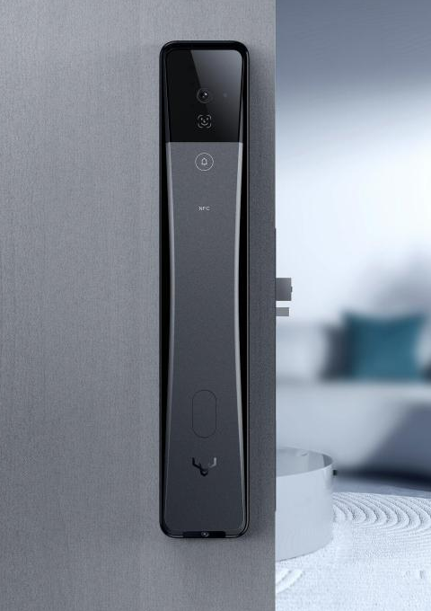
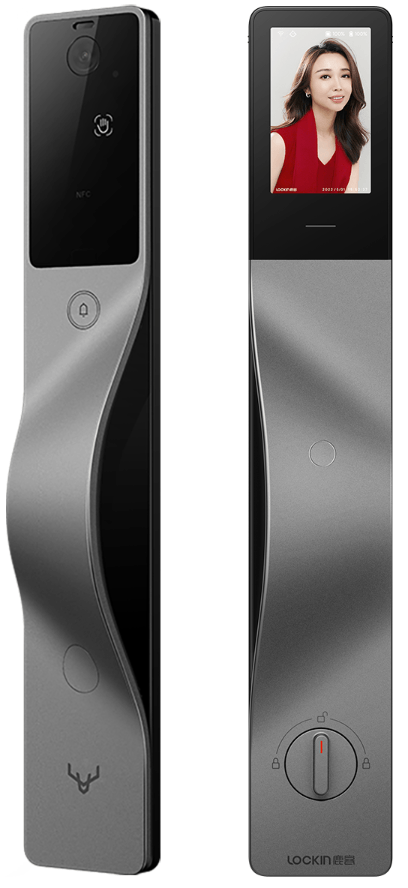
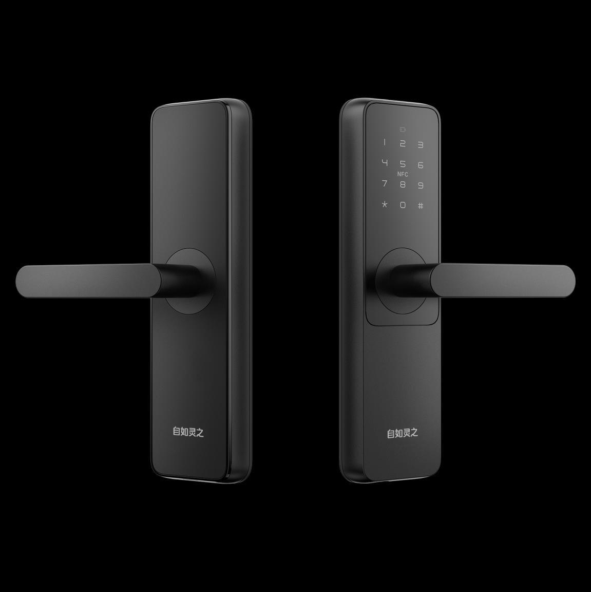
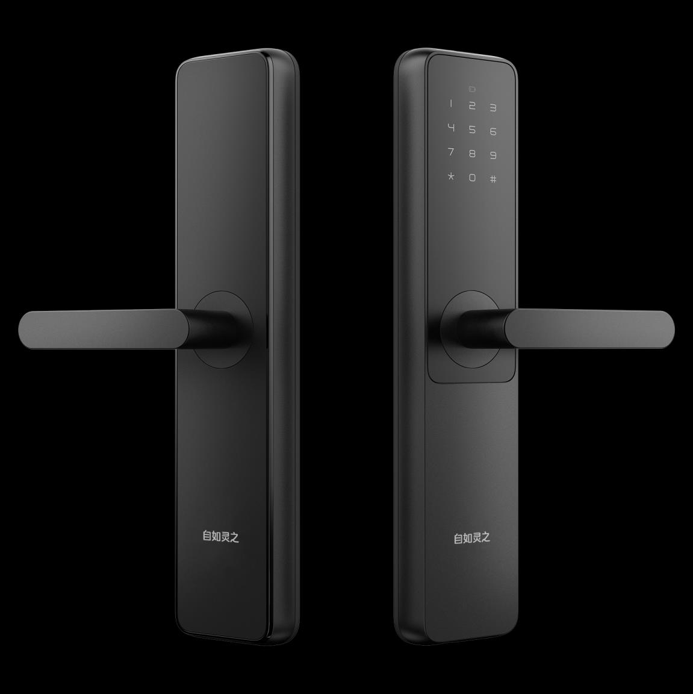

您的推荐方案
选好情况，
这里就有答案。
选择最符合您需要的一项，即可查看推荐和下一步。
交接时，先核对
原锁型号、钥匙是否齐全，以及原有账号与使用权限。
具体型号、费用与服务安排，核实后再确认。
收回房子，也接好门锁的下一程
纯自用、不想依赖自如 App 或额外网关？
优先了解鹿客 S6 Max，也可按需选择维保或机械锁。
换新升级 ／ 旧锁维保 ／ 机械锁安装

先选情况，再看方案
选择后，推荐会直接显示。
随时可以更换选择。
选择最符合您需要的一项，即可查看推荐和下一步。
原锁型号、钥匙是否齐全，以及原有账号与使用权限。
具体型号、费用与服务安排，核实后再确认。
三种服务，按需选择
先看门锁状态，再看使用习惯。
入户门与卧室门可以分别安排。
不想依赖自如 App 或额外网关，优先了解鹿客 S6 Max；日常开门与远程功能分别按需配置。
先确认型号、质保及故障情况，再核实可提供的维保服务。
不再需要智能开门的房间，可评估拆旧与机械锁安装。
看实物，认型号
找到现有门锁，核对铭牌型号。
三面指脉、结构光 3D 人脸
天地双摄、4.7 英寸内屏

换新前，核对门体与安装适配。

核对现有门锁，实际型号以铭牌为准。

核对现有门锁，实际型号以铭牌为准。
把关心的事说清楚
日常开门无需使用自如 App，也不需要额外网关，可使用指脉、人脸、密码或机械钥匙。如需远程视频对讲、远程开门等功能，需配置鹿客管家 App 和网络。
不一定。先核实原锁状态、钥匙、账号权限和质保情况；能继续使用的门锁，可以先了解维保。
会。新换装全系列随附一把机械钥匙。请在安装交付时现场核对，并按对应型号的说明妥善使用和保管。
需先确认城市、门锁及门体情况，再确认服务范围、费用、质保与安排时间。
可以先评估。是否适合改装，要看门厚、锁体、孔位及门的开向；入户门与卧室门需要分别确认。
先把情况选清楚